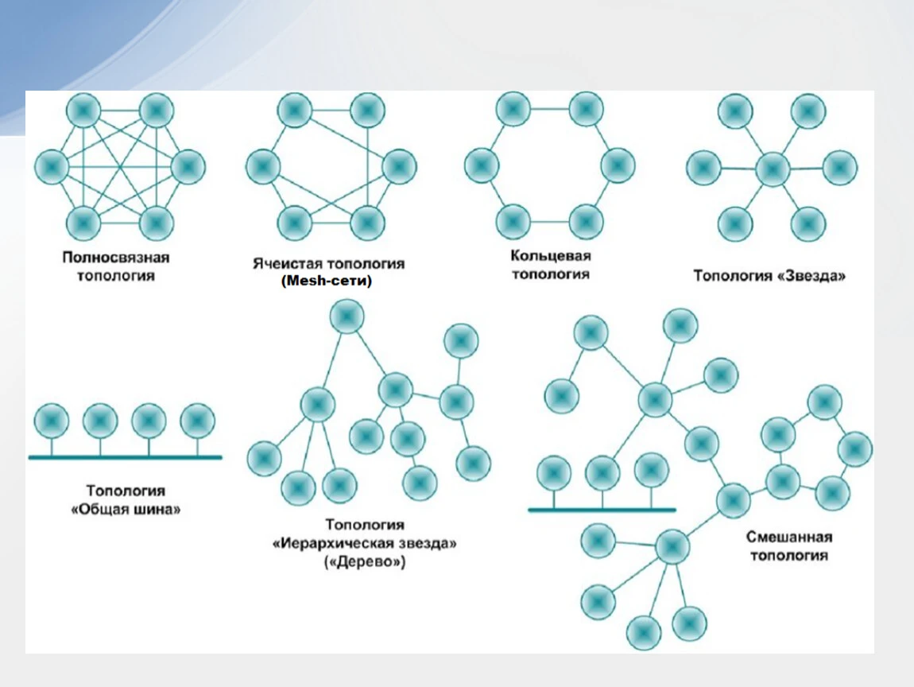

Иоганн Бенедикт Листинг
Сегодня в 11:23
Исследуя природу пространства, я пришел к мысли, что поверхности могут быть бесконечно сложными. Топология — это не просто наука, а философия формы!
325k просмотров
Иоганн Бенедикт Листинг
Пост от 21 ноября
В своей работе я стремился осветить связь между узловыми структурами и их топологическими свойствами. Узлы, кажется, просты на первый взгляд, но они представляют собой целый мир математических связей. Каждый узел может рассказать историю о связях и взаимодействиях в пространстве.
Когда мы берём веревку и создаем на ней узел, мы фиксируем определенную структуру, которая может быть как простой, так и сложной. Исследуя узлы, я пришёл к пониманию, что даже самые малозаметные изменения в их форме могут оказывать влияние на их свойства — вот почему так важно изучать узлы с разных точек зрения.
Например, мы можем рассмотреть узел, который можно затянуть до такого состояния, что он станет неразрывным. Это поднимает интересные вопросы о природе разрыва и непрерывности, с которыми я столкнулся в своих исследованиях. Надеюсь, что такие открытия помогут не только в математике, но и в таких областях, как физика и биология!
221.4K просмотров
Иоганн Бенедикт Листинг
Пост от 11 ноября
В процессе исследования я пришёл к осознанию, что наш мир можно моделировать не только в рамках традиционной геометрии, но и через топологические структуры. Моя концепция "суперпозиции" показывает, что множество состояний могут сосуществовать в одном и том же пространстве, сохраняя при этом свои уникальные свойства.
Представьте себе, что поверхность может изгибаться и деформироваться, но ее основные характеристики и взаимосвязи остаются неизменными. Это открытие недвусмысленно указывает на важность непрерывности и связанности в математике. Такой подход будет полезен не только для теории узлов, но и в таких областях, как квантовая физика и теория информации, где важна информация о состоянии системы.
Я продолжаю вдохновляться этим концептуальным мышлением и призываю всех вас задуматься о том, как многообразие форм и состояний может изменить ваше восприятие мира!

312.7K просмотров